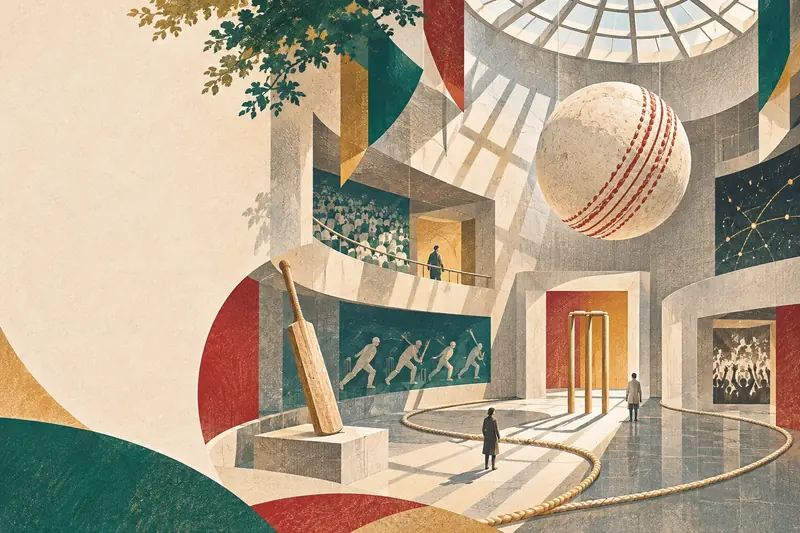

クリケットを、
美術館へ。
Cricket, Art & Imagination.
一球の軌跡。十一人の身体。十万人の声。
見慣れた競技を、少し違う場所から眺めてみる。
CRITT Museumは、クリケットをきっかけに創作と発見を楽しむ、ファンメイドのオンライン美術ポータルです。
競技を知っていても、知らなくても。作品と世界の博物館を巡りながら、クリケットの別の顔に出会ってください。

A GAME ISMORE THAN A GAME.
BEYOND
THE BOUNDARY
クリケットをめぐる10の想像力
一球を止め、身体を重ね、群衆の声を聴き、記録の空白を見つめる。クリケットから生まれた10の作品を、5つの展示室で巡るオンライン現代美術展。境界を越えた先に何が見えるか、あなた自身の足で確かめてください。
この展覧会はCRITTが独自に制作した仮想現代美術展です。実在する美術館で開催している展示ではありません。生成した創作作品をオンラインで鑑賞できます。
世界の
クリケット博物館。
クリケットを伝える場所は、世界各地にあります。道具、記録、写真、そして人々の記憶。CRITTの架空美術展とは別に、実際に存在する博物館の公式サイトを紹介します。
MCC Museum
Lord’s Cricket Ground。クリケットの歴史、競技資料、美術コレクションを伝える。
公式ページを開くBradman Museum
ドナルド・ブラッドマンを軸に、競技の文化と人物、世界への広がりを紹介。
公式ページを開くNew Zealand Cricket Museum
Basin Reserveにある博物館。ニュージーランドの道具と記録をたどる。
公式ページを開くWACA Ground Museum
WACA Groundの歴史と地域の記憶。競技遺産や体験型展示を扱う。
公式ページを開くMuseum of Welsh Cricket
ウェールズのクリケット史を記録。地域・女性の競技史も紹介する。
公式ページを開くAustralian Sports Museum
MCGのCricket Gallery。クリケットにまつわる人物、試合、社会と技術。
公式ページを開く※この欄は実在施設への外部リンク集です。各館の運営状況・開館情報はリンク先で確認してください。CRITTとは独立した施設です。
クリケットと、
現代美術。
クリケットは展示室でも語られてきました。競技を文化・移動・境界・音楽から見つめた、実在する企画展の記録です。現在開催中とは限りません。
It’s Just Not Cricket
Matilde Cassani｜移住者のクリケットと、道具・所属・境界をめぐるインスタレーション。
企画展の記録を見るAnyone for cricket?
Jesper Nordahl｜写真・映像を通してクリケットと植民地史、土地の記憶を問い直す展示。
企画展の記録を見るCricket & Calypso
Trinidad & Tobago Carnival Museum｜クリケットと音楽、カリブ海の歴史・抵抗を重ねた企画展。
企画展の記録を見るクリケットを好きになる方法は、
ひとつじゃない。
漫画でも、小説でも、ゲームでも、データでも、そして現代アートでも。CRITTは、クリケットの面白さを伝えるために、思いつくことをいろいろ試していく個人プロジェクトです。
この美術展も、その試みのひとつ。第1期β展から始め、作品と解説を少しずつ深めていきます。